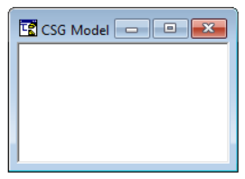
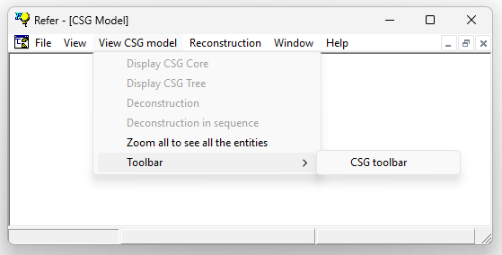

1.5.3.5 CSG Model Window
The CSG model window is used to visualize the reconstruction process based on Constructive Solid Geometry (CSG).

The CSG window displays various visual elements associated with the CSG-based reconstruction process.
The CSG window is linked to a dedicated toolbar that controls the information being displayed.
